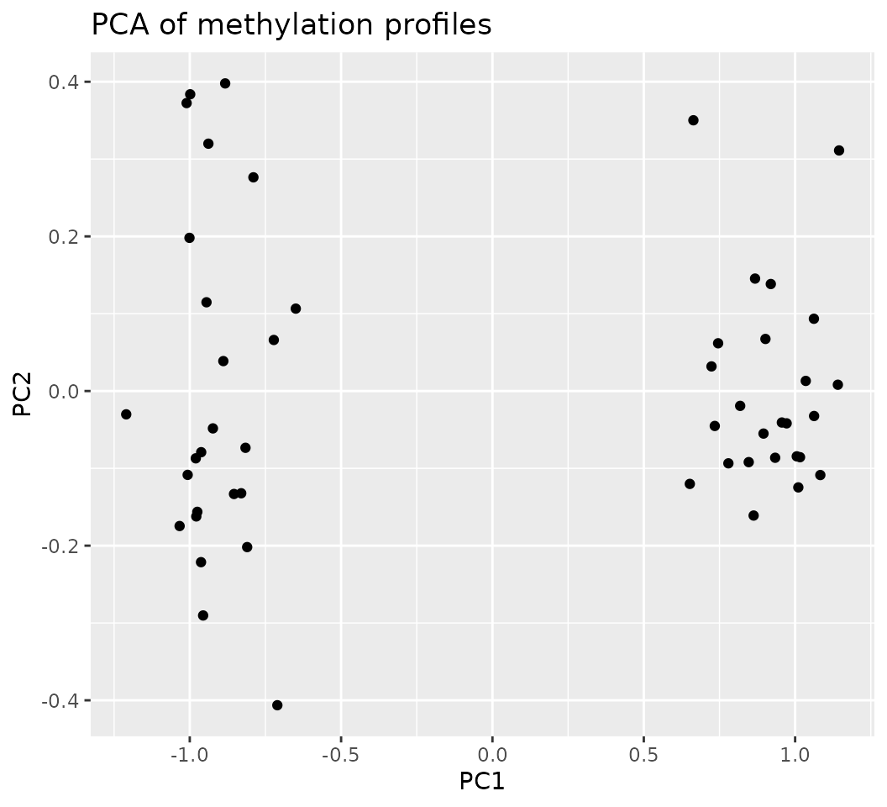
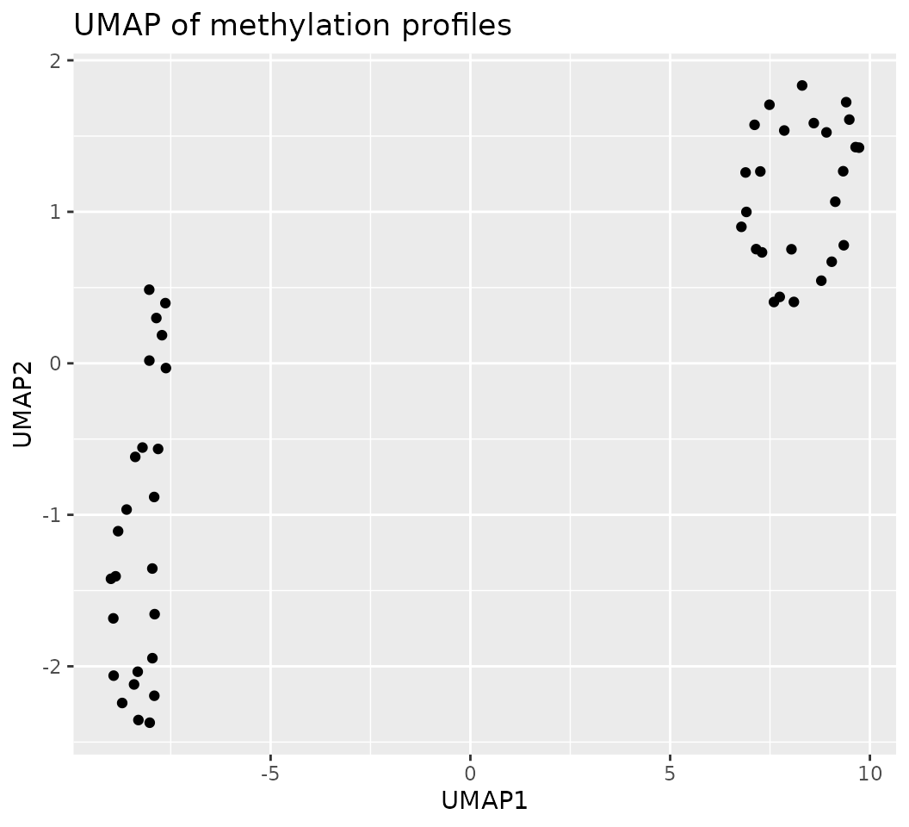
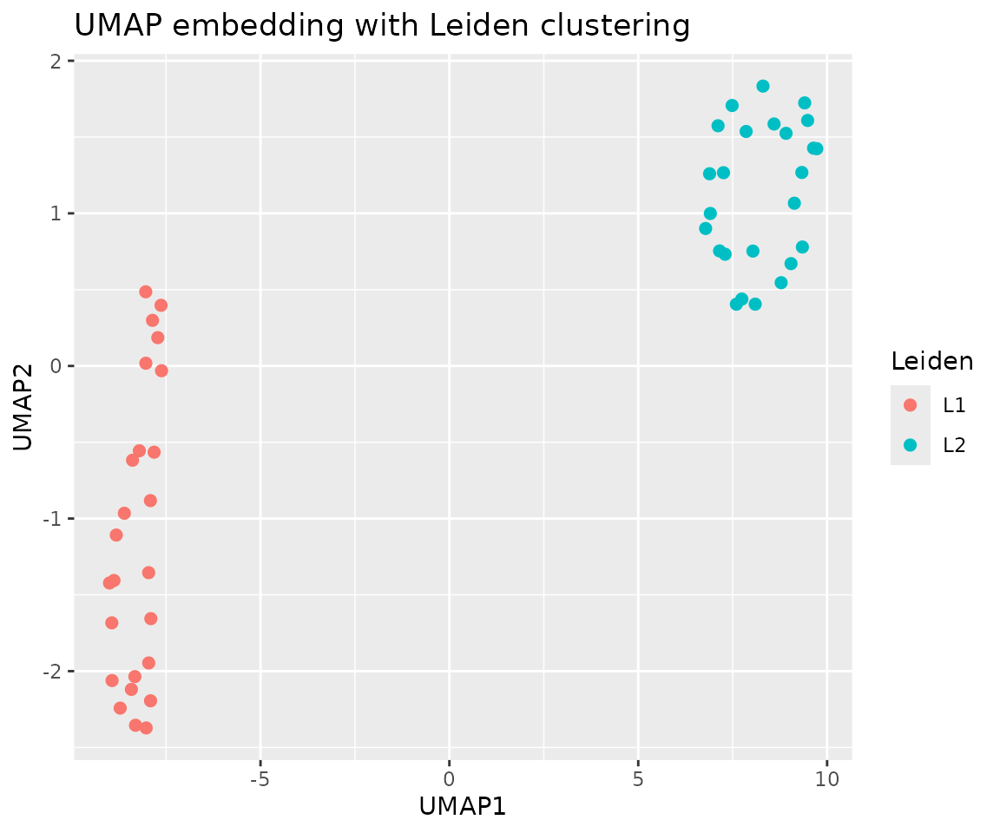
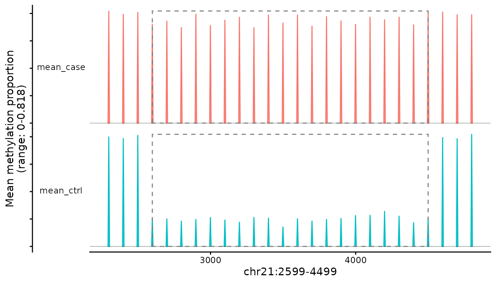

methylTracer
Zetian Jia
Brain Research Center, Zhongnan Hospital of Wuhan UniversityXiang Li
Brain Research Center, Zhongnan Hospital of Wuhan UniversitySource:
vignettes/methylTracer.Rmd
methylTracer.RmdIntroduction

DNA methylation is a key epigenetic modification involved in gene regulation, development, and disease, and is increasingly profiled at single-cell resolution to resolve cellular heterogeneity that is invisible in bulk measurements. Advances in whole-genome bisulfite sequencing (WGBS) and related chemistries now permit near-base–resolution methylome profiling across most CpG sites in the genome, including low-CpG-density regions. More recently, bisulfite-free methods such as TET-assisted pyridine borane sequencing (TAPS) and its derivatives have improved sequence quality, mapping rate, and coverage, and have been adapted to single-cell and multi-omic settings. Together with a rapidly expanding repertoire of single-cell methylation and multi-omic protocols, these technologies generate increasingly large and sparse datasets that pose new analytical challenges.
A wide range of Bioconductor packages has been developed for differential methylation analysis in bulk WGBS data. Packages such as bsseq implement smoothing-based strategies on per-CpG data to identify differentially methylated regions (DMRs). Others, including DSS, dmrseq, DMRcate, and related tools, provide sophisticated statistical frameworks for region-level testing using beta-binomial models, generalized least squares, or kernel smoothing. These methods have become standards for bulk WGBS and array data and are routinely used in studies of differential methylation across tissues, conditions, and disease states. However, they are typically designed for per-CpG count data from bulk samples, assume relatively dense coverage, and often rely on in-memory data structures that become prohibitive when scaling to thousands of single cells or genome-wide single-cell measurements. Recent reviews of computational methods for single-cell methylome analysis have highlighted the need for scalable, sparse-aware representations and region-level modelling tailored to single-cell data characteristics.
Several gaps therefore remain in the current ecosystem of methylation analysis tools. First, most existing DMR pipelines are optimized for bulk WGBS and do not directly accommodate the extreme sparsity and high cell counts characteristic of single-cell methylation datasets. Second, support for multiple library types—such as WGBS and TAPS, which differ in how methylated and unmethylated reads are encoded—is often ad hoc and requires custom data preprocessing. Third, although region-level approaches have been proposed for bulk data, there is still a need for a unified framework that (i) aggregates per-CpG counts into biologically meaningful genomic tiles or regions, (ii) stores the resulting matrices in an on-disk, scalable format, and (iii) links de-novo DMR discovery to downstream single-cell analyses within the Bioconductor ecosystem.
The methylTracer R package is designed to address these
gaps by providing a tile-based, HDF5-backed workflow for differential
methylation analysis in single-cell and large-scale DNA methylation
datasets. At its core, methylTracer aggregates per-CpG
methylation calls into region-level, coverage-weighted methylation
values, producing a sample-by-region matrix that can be defined over
arbitrary genomic annotations (e.g. fixed tiles, promoters, enhancers).
This matrix is then converted into an AnnData-style HDF5 file, from
which a lightweight met object is constructed. The met object stores
only indices and metadata in memory while streaming methylation values
from disk, enabling analyses of datasets that would otherwise exceed
memory limits.
Building on this representation, methylTracer implements a
single-cell–oriented analysis pipeline. The
cluster_met_cells() function applies a standard
dimensionality-reduction and clustering workflow (PCA, UMAP, and Leiden)
directly on the on-disk methylation matrix, yielding unsupervised groups
of cells that can serve as contrasts for differential methylation
analysis. Group-wise differences in region-level methylation are first
quantified using pre_calldmrs(), which performs Welch’s
t-tests across tiles given a chosen grouping variable (e.g. experimental
condition or Leiden cluster) and stores the resulting statistics back
into the HDF5 structure. A subsequent C++-accelerated procedure,
calldmrs_turbo(), merges neighbouring significant tiles
into de-novo DMRs under user-specified criteria on genomic distance,
length, CpG count, and proportion of significant tiles, thereby
improving computational efficiency and scalability for genome-wide DMR
discovery. Finally, the dmrs_to_sce_memory() function
aggregates methylation values over DMRs and returns a SingleCellExperiment
object whose rows correspond to DMRs and columns to cells, facilitating
integration with downstream Bioconductor workflows for visualization,
clustering, and functional analysis.
In this vignette, we pursue the following overarching goals: (i) to
demonstrate that a region-level, HDF5-backed representation allows
efficient analysis of large single-cell methylation datasets derived
from diverse library types; (ii) to show how methylTracer’s
pipeline—from matrix construction to DMR calling—can be used to identify
biologically interpretable methylation differences between cell groups;
and (iii) to illustrate how the resulting DMR-level
SingleCellExperiment objects can be seamlessly integrated
with existing single-cell analysis tools. Practically, the vignette is
organized around the main workflow: we first describe the construction
of a weighted methylation matrix from per-sample input files using
build_count_matrix, followed by conversion to an
AnnData-style HDF5 file with build_h5 and creation of the
met object via build_met_obj. We then apply
cluster_met_cells to obtain data-driven cell groupings,
compute region-wise differential statistics with
pre_calldmrs, and perform fast de-novo DMR calling using
calldmrs_turbo. Finally, we export DMR-level methylation
values to a SingleCellExperiment object using
dmrs_to_sce_memory and briefly outline typical downstream
analyses. Subsequent sections provide advanced usage examples, discuss
limitations and future extensions, and summarize the broader
implications of this framework for single-cell DNA methylation
research.
Overview of the methylTracer workflow
The methylTracer workflow is organized around a simple
but flexible sequence of steps that transform per-sample methylation
calls into de-novo differentially methylated regions (DMRs) and a
DMR-level single-cell object suitable for downstream analysis.
Conceptually, the pipeline can be summarized as follows:
Matrix construction (build_count_matrix)
Per-sample methylation files (e.g. bedGraph files produced by common
callers) are processed into region-level weighted methylation
proportions and coverage values. For each sample and each genomic region
defined in an annotation BED file, methylTracer aggregates
per-CpG counts into a single methylation estimate in [0,1], alongside
total coverage. The output is a pair of plain-text matrices (methylation
and coverage) with consistent row and column ordering.
HDF5 backbone creation (build_h5)
The region-level methylation and coverage matrices, together with sample metadata and genomic annotation, are written into an AnnData HDF5 file. Methylation values are stored as a dense double-precision dataset named “X”, while coverage and auxiliary metadata are stored under hierarchical groups (e.g. “/uns”, “/obs”, “/var”). This layout allows efficient on-disk storage and streaming access.
On-disk methylation object (build_met_obj)
The HDF5 file is wrapped into a lightweight methylTracer
object (hereafter referred to as a met object). The met object inherits
from HDF5Array
and stores only indices and metadata in memory, while all methylation
values remain on disk. Accessor functions such as metX(),
metObs(), and metVar() provide convenient
views of the underlying data.
Unsupervised clustering (cluster_met_cells)
To define cell groups for differential analysis,
methylTracer implements an unsupervised clustering
pipeline. Starting from the region-level methylation matrix,
cluster_met_cells() selects variable features, performs principal
component analysis (PCA), computes a low-dimensional embedding (UMAP),
and applies k-means and/or Leiden clustering. The resulting cluster
labels and coordinates are written back into the HDF5 file under /obs
and /uns.
Per-region differential statistics (pre_calldmrs)
Given a grouping variable (e.g. experimental condition or Leiden cluster), pre_calldmrs() computes region-wise differential methylation statistics between two groups (case vs. control). The function first ensures that group-wise summaries are available and then calls a statistical C++ backend to perform Welch’s t-tests across all regions. The full table of per-region statistics and the filtered set of significant regions are stored in the HDF5 file.
Fast de-novo DMR calling (calldmrs_turbo)
The calldmrs_turbo() function takes the per-region statistics and merges neighbouring significant regions into DMRs according to user-defined criteria on genomic distance, minimum length, minimum CpG count, and proportion of significant tiles. The core merging logic is implemented in C++ to ensure scalability on genome-wide data. The output is a GRanges object representing DMR coordinates and associated summary statistics.
Export to SingleCellExperiment (dmrs_to_sce_memory)
Finally, dmrs_to_sce_memory() aggregates region-level methylation values over each DMR for every cell and constructs a SingleCellExperiment object: rows correspond to DMRs, columns to cells, and assays contain DMR-level methylation matrices (e.g. assay “meth”). The rowRanges slot stores DMR coordinates, and colData contains the cell metadata imported from the met object.
In the remainder of this vignette, we follow this pipeline step by
step using a small toy dataset. The aim is to provide a concrete,
reproducible example that illustrates how methylTracer can
be used to construct a weighted methylation matrix, build an HDF5-backed
met object, cluster cells, call DMRs, and integrate the results into
standard single-cell Bioconductor workflows.
Step 1 - Installation
if (!requireNamespace("BiocManager", quietly = TRUE)) {
install.packages("BiocManager")
}
BiocManager::install(methylTracer)
if (!requireNamespace("devtools", quietly = TRUE)) {
install.packages("devtools")
}
devtools::install_github("zetian-jia/methylTracer")Step 2 – Building weighted methylation matrices
Input requirements and data model
The build_count_matrix() function is responsible for converting per-sample methylation call files into region-level methylation and coverage matrices. It is intentionally agnostic to the upstream calling tool, provided that the input files conform to a simple tabular format that encodes methylated and unmethylated read counts at each locus.
The function operates on three main inputs:
Sample information (sam_info) A CSV file containing at least one column named sample_name. Each entry corresponds to a methylation file in the input directory, and the file names must match the values in sample_name (optionally with a uniform extension).
-
Per-sample methylation files (input_dir) A directory containing one file per sample. Each file is assumed to be a bedGraph-like table with at least the following columns:
- chr – chromosome name (e.g. chr1),
- start – 0-based start coordinate,
- end – end coordinate,
- coverage and/or methylation fields describing methylated and unmethylated read counts at the locus.
The exact column interpretation can depend on the library type. For example, in a conventional WGBS setting, one may treat the fifth column as the number of methylated reads and the sixth as unmethylated reads, whereas in TAPS-like protocols these roles may be reversed. The lib argument of build_count_matrix() is used to select the appropriate interpretation internally.
-
Genomic annotation (annotation_file) A BED file that defines the genomic regions over which methylation should be aggregated. Each row corresponds to a marker (e.g. tile, promoter, enhancer) and typically contains:
- chromosome,
- start,
- end,
- an identifier or gene symbol,
- a unique marker name (e.g. chr1_1000_2000).
This annotation can be generated using standard tools such as bedtools makewindows for tiling, or more specialized region sets (e.g. promoters, enhancers, CpG islands).
Given these inputs, build_count_matrix() performs the following operations for each sample:
- Sort and standardize chromosomes, ensuring consistent ordering.
- Filter loci based on coverage thresholds, discarding sites with insufficient read depth.
- Remove loci overlapping user-specified excluded regions (e.g. SNP lists, blacklisted regions).
- Intersect per-locus methylation calls with the annotation BED file to determine which sites belong to which marker.
- Within each marker and sample, aggregate per-locus counts into coverage-weighted methylation proportions.
Formally, for a given marker
and sample
,
methylTracer computes
where and denote the methylated and unmethylated read counts at locus within region for sample . The denominator is also stored separately as a coverage measure.
The result is a pair of matrices with identical dimensions:
- Methylation matrix: a methylation matrix with entries in [0,1], and
- Coverage matrix: containing the total counts per region and sample.
Both matrices are written to disk as delimited text files and form the basis for the subsequent HDF5 construction.
Function interface and side effects
The function signature of build_count_matrix() is:
build_count_matrix(
sam_info = NULL,
input_dir = NULL,
annotation_file = NULL,
output_file = NULL,
lib = "TAPS",
exclude_bed = NULL
)Toy example: simulating minimal input files
To make the process concrete, we now illustrate how to generate a minimal set of input files for build_count_matrix() using simulated data. In this toy example, we create four synthetic samples with methylation calls on a small set of CpG sites, and define 1 kb tiles as regions.
output_dir <- tempdir()
set.seed(2025)
## Basic parameters
n_case <- 25L
n_ctrl <- 25L
n_cpg <- 50L
## 1. Sample metadata (sam_info)
sam_info_df <- data.frame(
sample_name = paste0("sample_", 1:(n_case + n_ctrl), ".bed"),
group = rep(c("case", "ctrl"), each = n_case),
stringsAsFactors = FALSE
)
sam_info <- file.path(output_dir, "sample_info.csv")
## 2. Marker coordinates and annotation
# Here we simulate a simple block of CpGs on chr21
start_positions <- seq(1000, by = 100, length.out = n_cpg)
marker_names <- paste0("chr21_", start_positions, "_", start_positions + 99)
annotation_file_df <- data.frame(
chr = "chr21",
start = start_positions,
end = start_positions + 99,
SYMBOL = paste0("gene_", seq_len(n_cpg)),
marker_name = marker_names,
stringsAsFactors = FALSE
)
annotation_file <- file.path(output_dir, "annotation.bed")
## 3. Simulate methylation matrix with a synthetic DMR
# Structure per sample:
# - first 15 CpGs: high methylation
# - middle 20 CpGs: DMR block
# - last 15 CpGs: high methylation
#
# Case group: DMR block has relatively high methylation (0.5–1).
# Control group: DMR block has lower methylation (0–0.4).
# All values are kept as 0–1 proportions (rounded to 3 decimals).
generate_methylation <- function(high, low,
n_up = 15L,
n_dmr = 20L,
n_down = 15L,
digits = 3L) {
stopifnot(n_up + n_dmr + n_down == n_cpg)
vals <- c(
runif(n_up, high[1], high[2]), # upstream high methylation
runif(n_dmr, low[1], low[2]), # DMR block
runif(n_down, high[1], high[2]) # downstream high methylation
)
round(vals, digits = digits)
}
case_mat <- sapply(
seq_len(n_case),
function(i) generate_methylation(
high = c(0.6, 1.0),
low = c(0.5, 1.0)
)
)
ctrl_mat <- sapply(
seq_len(n_ctrl),
function(i) generate_methylation(
high = c(0.6, 1.0),
low = c(0.0, 0.4)
)
)
colnames(case_mat) <- paste0("sample_", 1:n_case, ".bed")
colnames(ctrl_mat) <- paste0("sample_", (n_case + 1):(n_case + n_ctrl), ".bed")
input_file_df <- data.frame(
marker_name = marker_names,
cbind(case_mat, ctrl_mat),
check.names = FALSE
)
input_file <- file.path(output_dir, "methylTracer_matrix.txt")
## 4. Write input files
output_file <- "methylTracer_obj_test.h5"
unlink(file.path(output_dir, output_file), recursive = TRUE)
write.csv(sam_info_df, sam_info, row.names = FALSE)
write.table(input_file_df, input_file, sep = "\t", row.names = FALSE, quote = FALSE)
write.table(annotation_file_df, annotation_file, sep = "\t", row.names = FALSE, quote = FALSE)In this example, each synthetic .bedGraph file mimics a CpG-level methylation file with columns:
Step 3 – Creating an AnnData-style HDF5 backbone with build_h5
Once region-level methylation and coverage matrices have been generated by build_count_matrix(), the next step is to convert these text files into a structured HDF5 container that can be accessed efficiently from R. The build_h5() function implements this step by writing the matrices, region annotation, and sample metadata into an AnnData-like HDF5 file.
build_h5(
sam_info = sam_info,
input_file = input_file,
output_dir = output_dir,
output_file = output_file,
annotation_file = annotation_file
)
#> | | | 0% | |======================================================================| 100%HDF5 structure used by methylTracer
The HDF5 layout follows a simple, cell-by-feature organization:
/X A dense double-precision dataset storing the methylation matrix, with rows corresponding to regions (markers) and columns to samples or cells. Entries are weighted methylation values in [0,1].
/uns/coverage A dataset of the same dimensions as /X, storing total coverage (sum of methylated and unmethylated reads) for each region–sample pair.
/obs A group storing sample-level (cell-level) metadata as one-dimensional datasets.
/var A group storing marker-level metadata as one-dimensional datasets, each aligned with rows of /X.
Additional analysis results (e.g. clustering coordinates, DMR
statistics) are written into uns or into extra columns under obs/var by
other functions in the methylTracer workflow. At this
stage, however, build_h5() focuses on constructing the minimal backbone
required for a met object.
Step 4 – Constructing an on-disk met object
Concept: a lightweight interface to a large HDF5 file
The build_met_obj() function provides a high-level interface to methylTracer’s HDF5 files. Rather than loading the methylation matrix into memory
This design closely mirrors the philosophy of HDF5Array and AnnData: the heavy numeric arrays remain on disk; only small slices are loaded into memory when explicitly requested. As a result, the same workflow can be applied to toy examples and to much larger datasets without changing code, with memory usage primarily determined by the size of the subsets extracted at any given step.
Creating a met object
Constructing a met object from an existing HDF5 file is straightforward:
met <- build_met_obj(
file.path(output_dir, output_file),
sample_name = "sample_name",
marker_name = "marker_name"
)
metAccessor functions: metX(), metObs(), and metVar()
Methylation matrix: metX()
head(metX(met))
#> # A tibble: 6 × 51
#> marker_name sample_1.bed sample_2.bed sample_3.bed sample_4.bed sample_5.bed
#> <chr> <dbl> <dbl> <dbl> <dbl> <dbl>
#> 1 chr21_1000_1… 0.893 0.639 0.858 0.936 0.902
#> 2 chr21_1100_1… 0.79 0.894 0.985 0.951 0.615
#> 3 chr21_1200_1… 0.806 0.672 0.644 0.717 0.76
#> 4 chr21_1300_1… 0.799 0.653 0.923 0.942 0.672
#> 5 chr21_1400_1… 0.912 0.808 0.774 0.974 0.941
#> 6 chr21_1500_1… 0.802 0.743 0.922 0.762 0.957
#> # ℹ 45 more variables: sample_6.bed <dbl>, sample_7.bed <dbl>,
#> # sample_8.bed <dbl>, sample_9.bed <dbl>, sample_10.bed <dbl>,
#> # sample_11.bed <dbl>, sample_12.bed <dbl>, sample_13.bed <dbl>,
#> # sample_14.bed <dbl>, sample_15.bed <dbl>, sample_16.bed <dbl>,
#> # sample_17.bed <dbl>, sample_18.bed <dbl>, sample_19.bed <dbl>,
#> # sample_20.bed <dbl>, sample_21.bed <dbl>, sample_22.bed <dbl>,
#> # sample_23.bed <dbl>, sample_24.bed <dbl>, sample_25.bed <dbl>, …Sample metadata: metObs()
obs <- metObs(met)
head(obs)
#> # A tibble: 6 × 2
#> group sample_name
#> <chr[1d]> <chr[1d]>
#> 1 case sample_1.bed
#> 2 case sample_2.bed
#> 3 case sample_3.bed
#> 4 case sample_4.bed
#> 5 case sample_5.bed
#> 6 case sample_6.bedRegion metadata: metVar()
var <- metVar(met)
head(var)
#> # A tibble: 6 × 5
#> SYMBOL chr end marker_name start
#> <chr[1d]> <chr[1d]> <chr[1d]> <chr[1d]> <chr[1d]>
#> 1 gene_1 chr21 1099 chr21_1000_1099 1000
#> 2 gene_2 chr21 1199 chr21_1100_1199 1100
#> 3 gene_3 chr21 1299 chr21_1200_1299 1200
#> 4 gene_4 chr21 1399 chr21_1300_1399 1300
#> 5 gene_5 chr21 1499 chr21_1400_1499 1400
#> 6 gene_6 chr21 1599 chr21_1500_1599 1500Step 5 – Clustering cells
Once the HDF5-backed met object has been constructed, a natural next
step is to define groups of cells for differential methylation analysis.
While users may rely on experimental factors (e.g. case vs control,
treatment vs baseline), methylTracer also provides an
unsupervised clustering routine via the cluster_met_cells() function,
which operates directly on the on-disk methylation matrix.
Overview of the clustering workflow
The cluster_met_cells() function implements the following sequence:
Feature selection Compute row-wise variances using DelayedMatrixStats::rowVars on the HDF5-backed matrix X, and select the top_features most variable regions.
Dimensionality reduction Extract the selected rows into an in-memory matrix (cells in rows, features in columns) and perform principal component analysis (PCA) using stats::prcomp, retaining the first n_pcs principal components.
k-means clustering Run k-means (stats::kmeans) on the PCA coordinates to obtain n_clusters groups. The resulting labels are stored as character values (e.g. “C1”, “C2”, …) in the HDF5 file under /obs/
Optional UMAP embedding If run_umap = TRUE, compute a UMAP embedding from the PCA coordinates using uwot::umap. The embedding is stored as a numeric matrix at umap_dataset (default “uns/umap_coords”), with cells in rows and UMAP dimensions as columns.
Optional Leiden clustering If run_leiden = TRUE, use the nearest-neighbour information returned by UMAP (ret_nn = TRUE) to build a k-nearest neighbour graph with igraph, and apply Leiden clustering (igraph::cluster_leiden). The Leuven-style cluster labels (e.g. “L1”, “L2”, …) are written to /obs/
.
The combination of PCA, k-means, UMAP, and Leiden clustering provides both a low-dimensional visualization and one or more grouping variables that can be used in downstream DMR analysis.
Function interface
# met and h5_file were created previously
clust_res <- cluster_met_cells(
met,
n_clusters = 2,
top_features = 10,
n_pcs = 2,
run_umap = TRUE,
umap_n_neighbors = 10,
umap_min_dist = 0.01,
run_leiden = TRUE,
leiden_resolution = 0.01
)In practice, for real datasets one would typically use larger values for top_features and n_pcs, but the small settings above suffice for demonstration. The leiden column produced here can be used directly as the grouping variable when calling pre_calldmrs() in the next step.
clust_res$pca |>
ggplot(aes(x = PC1, y = PC2)) +
geom_point() +
labs(title="PCA of methylation profiles")
clust_res$umap |>
ggplot(aes(x = UMAP1, y = UMAP2)) +
geom_jitter() +
labs(title="UMAP of methylation profiles")
ggplot(
data = data.frame(clust_res$umap, leiden = clust_res$leiden),
aes(x = UMAP1, y = UMAP2, color = leiden)
) +
geom_point(size = 2) +
labs(
title = "UMAP embedding with Leiden clustering",
x = "UMAP1",
y = "UMAP2",
color = "Leiden"
)
Step 6 – Computing region-level differential statistics
Having defined cell groups (either via experimental labels such as “case” and “ctrl”, or via unsupervised clusters such as “L1” and “L2”), the next goal is to quantify differential methylation for each region in the matrix. The pre_calldmrs() function performs this task.
Statistical model
At a high level, pre_calldmrs() compares the distribution of methylation values between two groups of cells for each region. Methylation values are treated as continuous proportions in [0,1], and a Welch’s t-test is used to accommodate potential differences in variance between groups.
The calculations are implemented in a C++ backend (compute_Stat), which operates directly on the HDF5-backed matrix for efficiency.
Example: case–control vs cluster-based contrasts
pre_res <- pre_calldmrs(
met = met,
group_colname = "group",
case_group = "case",
control_group = "ctrl"
)
head(pre_res)
#> chr pos mean_case mean_ctrl diff diff.se stat pval
#> 1 chr21 1099 0.812 0.797 0.015 0.03286335 0.4564355 0.64807687
#> 2 chr21 1199 0.830 0.770 0.060 0.03098387 1.9364917 0.05280751
#> 3 chr21 1299 0.767 0.781 -0.014 0.03162278 -0.4427189 0.65796909
#> 4 chr21 1399 0.833 0.789 0.044 0.03577709 1.2298374 0.21875800
#> 5 chr21 1499 0.823 0.789 0.034 0.03286335 1.0345871 0.30086180
#> 6 chr21 1599 0.843 0.773 0.070 0.03286335 2.1300322 0.03316896
#> fdr
#> 1 0.80240133
#> 2 0.12001707
#> 3 0.80240133
#> 4 0.43253055
#> 5 0.51872725
#> 6 0.07897371Alternatively, to perform a data-driven contrast between two Leiden clusters (say “L1” and “L2”), we can set:
pre_res_leiden <- pre_calldmrs(
met = met,
group_colname = "leiden",
case_group = "L1",
control_group = "L2"
)Step 7 – Fast de-novo DMR calling
While pre_calldmrs() produces region-wise statistics, DMRs are typically defined as contiguous genomic segments in which multiple adjacent regions show consistent differential methylation. The calldmrs_turbo() function performs this aggregation using a C++ backend to ensure efficiency.
Example: calling DMRs on the toy dataset
After running the C++ backend, calldmrs_turbo() renames the region-level mean methylation columns to:
mean_
mean_
and constructs a GRanges object:
dmr_res <- calldmrs_turbo(
met = met,
case_group = "case",
ctrl_group = "ctrl"
)
dmr_res
#> GRanges object with 1 range and 6 metadata columns:
#> seqnames ranges strand | nCG md dmrs_length meanMethy1
#> <Rle> <IRanges> <Rle> | <integer> <numeric> <numeric> <numeric>
#> [1] chr21 2599-4499 * | 20 0.54715 1901 0.7484
#> meanMethy2 areaStat
#> <numeric> <numeric>
#> [1] 0.20125 295.953
#> -------
#> seqinfo: 1 sequence from an unspecified genome; no seqlengths
plot_dmrs(
met=met,
pre_calldmrs_res=pre_res,
region="chr21:2599-4499"
)
Step 8 – Aggregating DMR-level methylation and building a
SingleCellExperiment
The final step in the core methylTracer workflow is to
aggregate methylation values over DMRs for each cell and organize the
result into a SingleCellExperiment (SCE) object. This representation is
convenient for downstream analyses such as dimensionality reduction,
clustering, and differential testing using standard single-cell
Bioconductor workflows.
Example: constructing the DMR-level SingleCellExperiment
sce_dmr <- dmrs_to_sce_memory(
met = met,
dmrs = dmr_res,
assay_name = "meth",
verbose = FALSE
)
sce_dmr
#> class: SingleCellExperiment
#> dim: 1 50
#> metadata(0):
#> assays(1): meth
#> rownames(1): chr21:2599-4499
#> rowData names(6): nCG md ... meanMethy2 areaStat
#> colnames(50): sample_1.bed sample_2.bed ... sample_49.bed sample_50.bed
#> colData names(7): cluster colMeans2 ... sample_name cell
#> reducedDimNames(0):
#> mainExpName: NULL
#> altExpNames(0):At this stage, the user can proceed with familiar single-cell analysis tools.
Discussion
The methylTracer workflow presented in this vignette
illustrates how a region-level, HDF5-backed representation can provide a
practical solution to several challenges in single-cell and large-scale
DNA methylation analysis. By design, methylTracer separates
the pipeline into conceptually simple stages: (i) construction of a
weighted methylation matrix from per-sample count files, (ii)
transformation of this matrix into an AnnData-style HDF5 container,
(iii) creation of a lightweight on-disk met object as the primary
analysis interface, (iv) unsupervised clustering of cells based on
region-level methylation patterns, (v) computation of per-region
differential statistics using Welch’s t-tests, (vi) fast de-novo DMR
calling via a C++ implementation, and (vii) export of DMR-level
methylation values to a SingleCellExperiment object. This
modular structure makes it straightforward to substitute or extend
individual steps while preserving a coherent end-to-end workflow.
A central feature of methylTracer is the decision to
operate at the level of genomic regions or tiles, using
coverage-weighted methylation proportions rather than individual CpG
sites. For single-cell and sparse bulk datasets, where coverage at any
single CpG can be highly variable and often extremely low, aggregation
over predefined regions improves stability, reduces noise, and makes it
feasible to work with a single matrix that covers large fractions of the
genome. The explicit dependence on user-specified annotation
(e.g. fixed-width tiles, promoters, enhancers) also offers flexibility:
different biological questions can be addressed by choosing appropriate
region sets without modifying downstream code.
From a computational perspective, the use of an AnnData-style HDF5
layout and an HDF5Array-based met object enables analyses
that would be difficult or impossible with purely in-memory
representations. The methylation matrix can have dimensions in the
hundreds of thousands of regions by thousands or tens of thousands of
cells, yet only small subsets need to be loaded at a time. This design
is particularly valuable when combining genome-wide coverage with large
numbers of cells, or when working on shared compute infrastructure with
limited memory per session. The same architecture also underlies the
clustering and DMR steps: expensive operations such as variance
calculations and group-wise summaries are implemented using delayed
matrix operations and C++ backends, while the main R interface remains
relatively simple.
The integration of unsupervised clustering and DMR detection in a
single framework is another practical advantage. In many single-cell
studies, biologically meaningful contrasts (e.g. cell states or
subtypes) are not known a priori and must be inferred from the data. By
allowing users to base DMR analysis on Leiden clusters or other grouping
variables stored in the met object, methylTracer supports
both hypothesis-driven (case vs control) and data-driven (cluster vs
cluster) comparisons with the same infrastructure. The final export of
DMR-level methylation into a SingleCellExperiment object
closes the loop by providing a familiar container for downstream
dimensionality reduction, visualization, and integration with other
modalities within the Bioconductor ecosystem.
Despite these strengths, several limitations of the current
implementation should be acknowledged. First, the statistical framework
for DMR calling is deliberately simple: Welch’s t-tests on region-level
methylation values followed by a merging procedure based on physical
proximity and consistency of effect. This approach is effective and
computationally efficient, but it does not explicitly model read counts,
coverage variability, or overdispersion in the way that more complex
hierarchical or beta–binomial models do. In settings where coverage is
highly heterogeneous or where subtle differences must be detected in the
presence of strong technical noise, such models may be advantageous.
Second, the primary contrast supported by the existing API is between
two groups at a time. Although multiple contrasts can be run
sequentially, a more general framework that handles multi-level factors,
continuous covariates, or repeated measurements within a unified model
would be desirable. Third, the dmrs_to_sce_memory()
function is designed for speed and simplicity rather than strict memory
minimization; for extremely large DMR sets and dense region coverage,
its strategy of loading all overlapping markers into memory may need to
be adapted or applied to subsets.
There are also conceptual trade-offs associated with the choice of region definition. Fixed-width tiles provide uniform coverage and straightforward interpretation of distances and lengths but may not align optimally with functional elements such as promoters, enhancers, or CpG islands. Conversely, using functionally defined regions can improve interpretability at the cost of more complex coverage patterns and potentially uneven statistical power. In practice, methylTracer’s design allows users to experiment with alternative annotation strategies by simply changing the input BED file and rerunning the early steps of the pipeline; however, systematic comparisons of different region schemes remain an open area for methodological work.
These limitations suggest several directions for future development.
On the statistical side, one natural extension would be to incorporate
models that jointly account for methylation proportions and coverage,
possibly within a generalized linear or hierarchical modeling framework,
while preserving the on-disk, region-level architecture. Another is to
support multi-group comparisons, covariate adjustment, and random
effects directly in the DMR pipeline, thereby broadening the range of
experimental designs that can be handled within
methylTracer. On the computational side, further
optimizations—such as more extensive use of parallel processing, GPU
acceleration, or block-wise algorithms for extremely large HDF5-backed
matrices—could improve performance on very large cohorts. From a
usability perspective, additional helper functions for visualization
(e.g. genomic tracks over DMRs, per-cluster methylation profiles) and
for integration with other single-cell modalities (e.g. matching
methylation clusters with transcriptomic clusters) would further enhance
the package’s practical utility.
In summary, methylTracer provides a coherent, scalable,
and flexible framework for tile-based DMR detection in single-cell and
large-scale DNA methylation studies. By combining weighted region-level
aggregation, HDF5-backed storage, C++-accelerated statistics, and direct
interoperability with SingleCellExperiment, it offers a
practical tool for researchers seeking to explore methylation
differences across heterogeneous cell populations. The examples in this
vignette demonstrate how the core workflow can be applied to both toy
and real datasets; we anticipate that the same principles can be
extended and adapted as new technologies and analytical needs continue
to emerge in the field of epigenomics.
reference
Geisenberger C, van den Berg J, van Batenburg V, et al. (2025). Single-cell multi-omic detection of DNA methylation and histone modifications reconstructs the dynamics of epigenomic maintenance. Nature Methods 22(10):2042–2051. doi:10.1038/s41592-025-02847-4
Ahn J, Heo S, Lee J, Bang D (2021). Introduction to Single-Cell DNA Methylation Profiling Methods. Biomolecules 11(7):1013. doi:10.3390/biom11071013
Hansen KD, Langmead B, Irizarry RA (2012). BSmooth: from whole genome bisulfite sequencing reads to differentially methylated regions. Genome Biology 13(10):R83. doi:10.1186/gb-2012-13-10-r83
Liu Y, Siejka-Zielińska P, Velikova G, Bi Y, Yuan F, Tomkova M, et al. (2019). Bisulfite-free direct detection of 5-methylcytosine and 5-hydroxymethylcytosine at base resolution. Nature Biotechnology 37(4):424–429. doi:10.1038/s41587-019-0041-2
Kremer LPM, Navarro-Martín A, Anders S, Martin-Villalba A (2024). Analyzing single-cell bisulfite sequencing data with MethSCAn. Nature Methods 21(9):1616–1623. doi:10.1038/s41592-024-02347-x
Hansen KD, Timp W, Bravo HC, Sabunciyan S, Langmead B, McDonald OG, et al. (2011). Increased methylation variation in epigenetic domains across cancer types. Nature Genetics 43(8):768–775. doi:10.1038/ng.865
Schultz MD, Schmitz RJ, Ecker JR (2012). “Leveling” the playing field for analyses of single-base resolution DNA methylomes. Trends in Genetics 28(12):583–585. doi:10.1016/j.tig.2012.10.012
Morgan M, Obenchain V, Hester J, Pagès H (2025). SummarizedExperiment: A container (S4 class) for matrix-like assays. R package version 1.40.0. Bioconductor. doi:10.18129/B9.bioc.SummarizedExperiment. Available at: https://bioconductor.org/packages/SummarizedExperiment.
Fischer B, Smith M, Pau G (2025). rhdf5: R Interface to HDF5. R package version 2.54.0. Bioconductor. doi:10.18129/B9.bioc.rhdf5. Available at: https://bioconductor.org/packages/rhdf5.
Pagès H (2025). DelayedArray: A unified framework for working transparently with on-disk and in-memory array-like datasets. R package version 0.36.0. Bioconductor. doi:10.18129/B9.bioc.DelayedArray. Available at: https://bioconductor.org/packages/DelayedArray.
Hickey P (2025). DelayedMatrixStats: Functions that apply to rows and columns of
DelayedMatrixobjects. R package version 1.32.0. Bioconductor. doi:10.18129/B9.bioc.DelayedMatrixStats. Available at: https://bioconductor.org/packages/DelayedMatrixStats.Eddelbuettel D, Francois R, Allaire J, Ushey K, Kou Q, Russell N, Ucar I, Bates D, Chambers J (2025). Rcpp: Seamless R and C++ Integration. R package version 1.1.0. doi:10.32614/CRAN.package.Rcpp. Available at: https://CRAN.R-project.org/package=Rcpp.
Eddelbuettel D, François R (2011). Rcpp: Seamless R and C++ Integration. Journal of Statistical Software 40(8):1–18. doi:10.18637/jss.v040.i08
Eddelbuettel D (2013). Seamless R and C++ Integration with Rcpp. Springer, New York. doi:10.1007/978-1-4614-6868-4. ISBN 978-1-4614-6867-7.
Eddelbuettel D, Balamuta J (2018). Extending R with C++: A Brief Introduction to Rcpp. The American Statistician 72(1):28–36. doi:10.1080/00031305.2017.1375990
Amezquita RA, Lun ATL, Becht E, Carey VJ, Carpp LN, Geistlinger L, Marini F, Rue-Albrecht K, Risso D, Soneson C, Waldron L, Pagès H, Smith ML, Huber W, Morgan M, Gottardo R, Hicks SC (2020). Orchestrating single-cell analysis with Bioconductor. Nature Methods 17:137–145. doi:10.1038/s41592-019-0654-x
Session Information
sessionInfo()
#> R version 4.6.0 (2026-04-24)
#> Platform: x86_64-pc-linux-gnu
#> Running under: Ubuntu 24.04.4 LTS
#>
#> Matrix products: default
#> BLAS: /usr/lib/x86_64-linux-gnu/openblas-pthread/libblas.so.3
#> LAPACK: /usr/lib/x86_64-linux-gnu/openblas-pthread/libopenblasp-r0.3.26.so; LAPACK version 3.12.0
#>
#> locale:
#> [1] LC_CTYPE=C.UTF-8 LC_NUMERIC=C LC_TIME=C.UTF-8
#> [4] LC_COLLATE=C.UTF-8 LC_MONETARY=C.UTF-8 LC_MESSAGES=C.UTF-8
#> [7] LC_PAPER=C.UTF-8 LC_NAME=C LC_ADDRESS=C
#> [10] LC_TELEPHONE=C LC_MEASUREMENT=C.UTF-8 LC_IDENTIFICATION=C
#>
#> time zone: UTC
#> tzcode source: system (glibc)
#>
#> attached base packages:
#> [1] stats graphics grDevices utils datasets methods base
#>
#> other attached packages:
#> [1] ggplot2_4.0.3 methylTracer_0.99.8 BiocStyle_2.39.0
#>
#> loaded via a namespace (and not attached):
#> [1] SummarizedExperiment_1.41.1 gtable_0.3.6
#> [3] xfun_0.57 bslib_0.10.0
#> [5] rhdf5_2.55.16 Biobase_2.71.0
#> [7] lattice_0.22-9 rhdf5filters_1.23.3
#> [9] vctrs_0.7.3 tools_4.6.0
#> [11] generics_0.1.4 stats4_4.6.0
#> [13] tibble_3.3.1 pkgconfig_2.0.3
#> [15] Matrix_1.7-5 data.table_1.18.2.1
#> [17] RColorBrewer_1.1-3 S7_0.2.2
#> [19] desc_1.4.3 S4Vectors_0.49.3
#> [21] sparseMatrixStats_1.23.0 lifecycle_1.0.5
#> [23] FNN_1.1.4.1 compiler_4.6.0
#> [25] farver_2.1.2 textshaping_1.0.5
#> [27] Seqinfo_1.1.0 htmltools_0.5.9
#> [29] sass_0.4.10 yaml_2.3.12
#> [31] pillar_1.11.1 pkgdown_2.2.0
#> [33] jquerylib_0.1.4 tidyr_1.3.2
#> [35] uwot_0.2.4 SingleCellExperiment_1.33.2
#> [37] DelayedArray_0.37.1 cachem_1.1.0
#> [39] abind_1.4-8 tidyselect_1.2.1
#> [41] digest_0.6.39 stringi_1.8.7
#> [43] purrr_1.2.2 dplyr_1.2.1
#> [45] bookdown_0.46 labeling_0.4.3
#> [47] fastmap_1.2.0 grid_4.6.0
#> [49] cli_3.6.6 SparseArray_1.11.13
#> [51] magrittr_2.0.5 S4Arrays_1.11.1
#> [53] utf8_1.2.6 h5mread_1.3.3
#> [55] withr_3.0.2 DelayedMatrixStats_1.33.0
#> [57] scales_1.4.0 rmarkdown_2.31
#> [59] XVector_0.51.0 matrixStats_1.5.0
#> [61] igraph_2.3.0 ragg_1.5.2
#> [63] HDF5Array_1.39.1 evaluate_1.0.5
#> [65] knitr_1.51 GenomicRanges_1.63.2
#> [67] IRanges_2.45.0 rlang_1.2.0
#> [69] Rcpp_1.1.1-1.1 glue_1.8.1
#> [71] BiocManager_1.30.27 BiocGenerics_0.57.1
#> [73] jsonlite_2.0.0 R6_2.6.1
#> [75] Rhdf5lib_1.99.6 MatrixGenerics_1.23.0
#> [77] systemfonts_1.3.2 fs_2.1.0